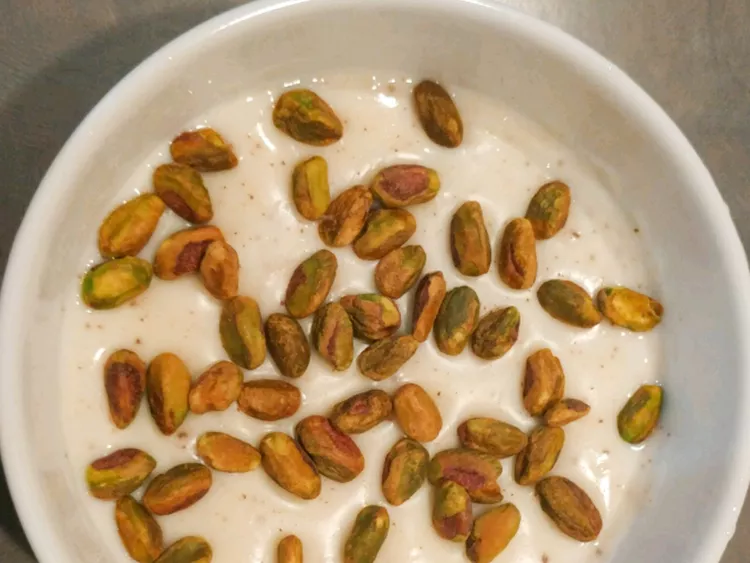

HAWAWSHI
Hawawshi are Egyptian pita pockets. After cooking, consider adding lettuce, cheese, tomatoes, and jalapeño or serrano peppers into the pita pockets as well.
INGREDIENTS
- ½ pound ground beef
- 2 tomatoes, diced
- 1 large onion, diced
- 1 green bell pepper, diced
- 1 pinch paprika, or to taste
- 1 pinch ground coriander, or to taste
- 1 pinch ground cinnamon, or to taste
- 1 pinch ground nutmeg, or to taste
- salt and ground black pepper to taste
- 5 pita bread rounds, split
- 1 tablespoon corn oil
DIRECTIONS
- Preheat the oven to 325 degrees F (165 degrees C).
- Heat a large skillet over medium-high heat. Cook and stir ground beef in the hot skillet until browned and crumbly, 5 to 7 minutes. Let cool slightly.
- Mix cooked beef, tomatoes, onion, bell pepper, paprika, coriander, cinnamon, nutmeg, salt, and pepper together in a large bowl until well combined. Stuff mixture inside of pita bread rounds.
- Brush tops with corn oil and wrap each in aluminum foil. Place on a baking sheet.
- Bake in the preheated oven until toasted and vegetables are softened, about 30 minutes.
MAHALABIA
Mahalabia is a popular dessert in Egypt and other Middle Eastern countries. This rich version features both milk and heavy cream.
INGREDIENTS
- 2 cups milk
- 1 cup heavy cream
- 3 tablespoons white sugar
- 2 teaspoons vanilla sugar
- 4 teaspoons cornstarch, or more as needed
- ¼ teaspoon ground cinnamon, or to taste (Optional)
DIRECTIONS
- Combine milk, cream, sugar, vanilla sugar, and cornstarch in a saucepan and whisk until well combined. Slowly bring to a boil over medium heat and cook, stirring constantly, until thickened and mixture coats the back of a spoon, 10 to 15 minutes. Remove from heat.
- Pour pudding into 4 dessert bowls and allow to cool to room temperature, about 30 minutes. Refrigerate until chilled, 1 more hour. Sprinkle with cinnamon to serve.